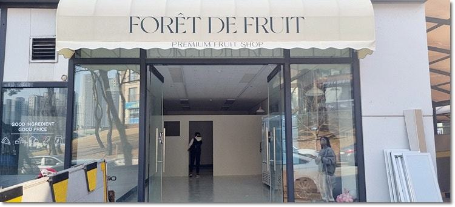
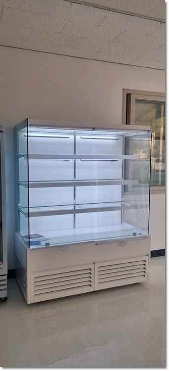
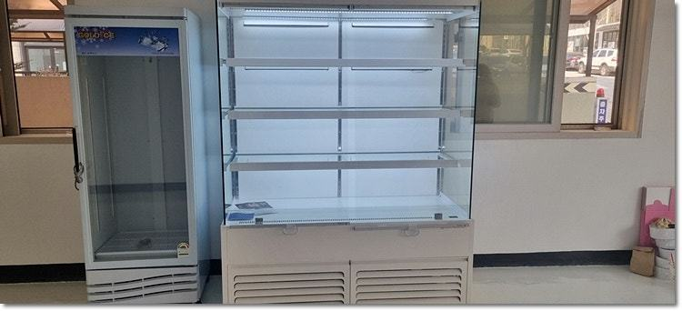
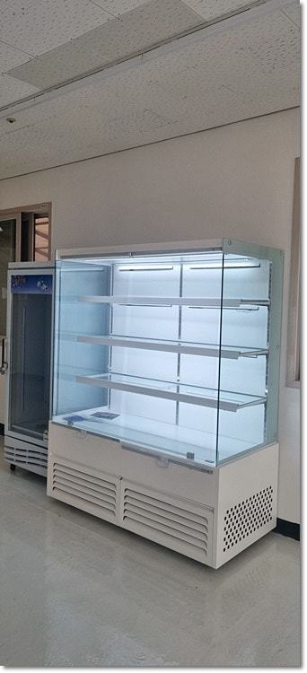
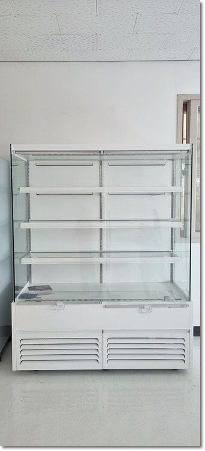
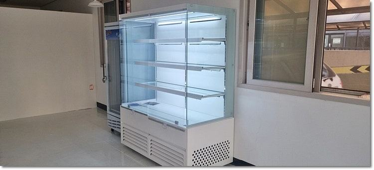
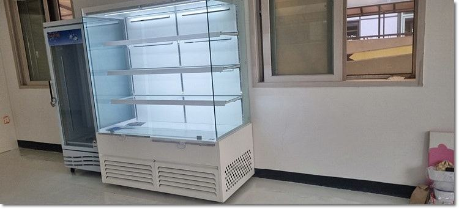
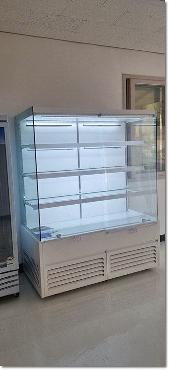
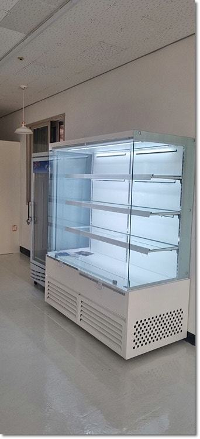
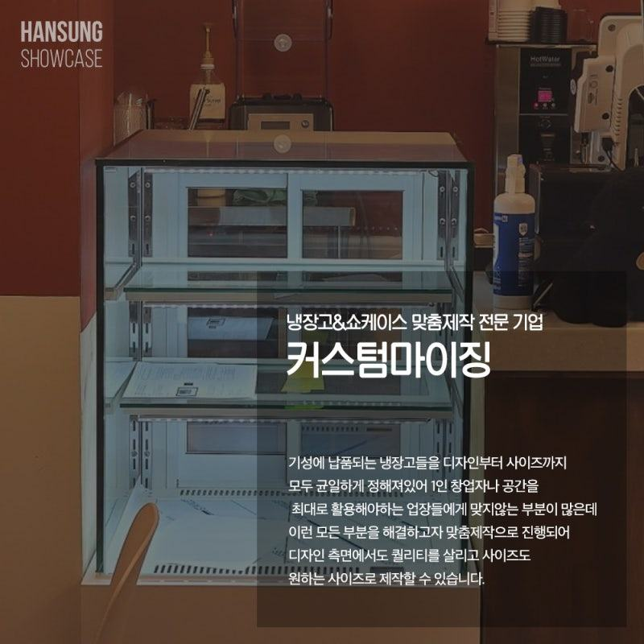

과일진열쇼케이스
과일가게 냉장고, 보관용과 진열용을 나눠 생각하기

과일가게 냉장고는 재고를 보관하는 냉장고와 손님에게 보여 주는 진열용 쇼케이스의 역할이 다르기 때문에 한 대로 두 가지를 다 하려 하면 어느 한쪽이 부족해집니다. 보관용은 용량과 온도 안정, 진열용은 조명과 습도, 손님 동선을 기준으로 따로 고르시는 게 좋습니다.
안녕하세요. 과일 매장에 들어가는 냉장 진열장을 맞춤으로 제작하는 한성쇼케이스입니다.
과일가게를 처음 여시는 사장님들은 냉장고를 한 번에 해결하고 싶어 하십니다. "큰 냉장고 하나 들여서 보관도 하고 진열도 하면 되지 않을까요?" 하고 물으시죠.
그런데 과일가게에서 냉장고가 하는 일은 두 가지로 나뉩니다. 새벽에 받아 온 박스를 상하지 않게 보관하는 일, 그리고 손님이 지나가다 멈춰 서도록 과일을 예쁘게 보여 주는 일입니다.
이 둘은 필요한 조건이 서로 다릅니다.
오늘은 과일가게 냉장고를 보관용과 진열용으로 나눠 생각해야 하는 이유와, 매장 규모별로 어떻게 구성하면 좋은지 정리해 드리겠습니다.
1. 보관용 냉장고가 해야 할 일
보관용은 박스째 들어오는 재고를 다음 진열 때까지 지키는 장비입니다. 손님 눈에 보일 필요가 없으니 조명이나 유리보다 용량과 온도 안정이 중요합니다.
박스를 쌓았을 때 냉기가 골고루 도는지, 문을 열고 박스를 꺼내기 편한 깊이인지가 핵심이죠.
과일마다 잘 맞는 보관 온도가 다르니 모든 과일을 한 냉장고에 넣지 말고 냉장이 꼭 필요한 품목만 골라 넣으세요.
상온에서 후숙이 필요한 과일까지 냉장고에 넣으면 맛이 덜 들거나 냉해를 입을 수 있습니다.
- 냉장 보관이 꼭 필요한 품목만 골라 두세요.
- 박스 규격에 맞는 내부 깊이인지 확인하세요.
2. 진열용 쇼케이스가 해야 할 일
진열용 과일쇼케이스는 손님에게 과일을 보여 주는 장비입니다. 과일 색이 살아나는 조명, 손님이 직접 집기 쉬운 높이와 각도, 매장 인테리어와 어울리는 프레임 색이 중요합니다.
습도도 신경 써야 합니다. 바람이 과일에 직접 닿으면 표면이 마르고 윤기가 사라지며, 너무 습하면 물기가 맺혀 쉽게 무릅니다.
진열 시간이 긴 컷과일이나 베리류가 많다면 습도 관리에 유리한 구조인지 상담 때 꼭 확인하세요.


3. 한 대로 겸할 때 생기는 문제
진열용 쇼케이스에 재고 박스까지 넣으면 진열 칸이 박스에 가려 매장이 창고처럼 보입니다. 반대로 보관용 냉장고에 진열을 하면 손님이 문을 열어야 과일을 볼 수 있어 지나치는 손님을 붙잡기 어렵습니다.
문을 여닫는 횟수도 문제입니다. 손님이 수시로 여는 냉장고에 재고까지 들어 있으면 내부 온도가 계속 흔들려 재고 과일 상태까지 함께 나빠집니다.
4. 매장 규모별 구성
작은 과일가게라면 진열용 오픈쇼케이스 한 대에 소분 상품을 두고, 뒤쪽 작업 공간에 작은 보관용 냉장고를 두는 구성이 많습니다.
컷과일을 판다면 직원 쪽에서 꺼내는 냉장 진열장을 하나 더하는 방식도 있습니다.
규모가 큰 매장은 박스 재고용 냉장 창고와 진열용 쇼케이스를 완전히 분리하고, 창고에서 진열대까지 동선을 짧게 잡는 것이 하루 작업량을 줄이는 방법입니다.
어느 규모든 진열대에는 그날 팔 만큼만 꺼내 두고, 오후에 한 번 더 채우는 방식으로 운영하면 진열 과일이 지치기 전에 회전시킬 수 있습니다.
보관 냉장고 안에서도 먼저 들어온 박스를 앞쪽에 두어 오래된 재고가 뒤에 숨지 않게 해 주세요.
- 진열대와 보관 냉장고 사이 동선을 짧게 잡으세요.
- 컷과일 판매 여부를 먼저 정하세요.
체크리스트
- 냉장 보관 품목과 상온 품목 구분
- 보관용: 박스 규격과 내부 깊이, 온도 안정
- 진열용: 조명 색, 습도, 손님 높이
- 재고와 진열을 한 대에 섞지 않기
- 보관 냉장고와 진열대 사이 동선
프리미엄 과일 매장에 맞춘 화이트 오픈쇼케이스
프리미엄 프루트샵 오픈을 준비하신 사장님 매장에 오픈쇼케이스 냉장고를 납품한 사례입니다. 어떤 구성이 좋을지 사장님과 충분히 조율한 뒤 주문 제작에 들어갔고, 먼저 가게 분위기와 인테리어를 확인한 다음 사이즈 체크부터 소재, 프레임 컬러까지 하나씩 정했습니다.
알록달록한 과일이 더 돋보이도록 깔끔한 화이트 색상으로 마감했고, 사람이 직접 먹는 과일을 다루는 만큼 위생과 청결에 신경 써서 제작했습니다.
설치는 전문 설치 기사님이 맡아 스크래치 같은 문제가 생기지 않도록 마무리했습니다.










자주 묻는 질문
가정용 냉장고를 과일 보관용으로 써도 되나요?
재고가 적은 초기에는 쓸 수 있지만, 박스 단위로 자주 넣고 빼면 용량과 냉기 회복이 금방 부족해집니다.
재고 양이 늘면 업소용 보관 냉장고를 따로 두시길 권합니다.
과일쇼케이스 색상을 매장에 맞출 수 있나요?
프레임 컬러와 소재를 매장 인테리어에 맞춰 정해 제작합니다. 매장 사진을 보내 주시면 어울리는 구성을 함께 정해 드립니다.
설치 후 관리는 어떻게 받나요?
전국 240여 개 A/S 센터를 통해 사후 관리를 받으실 수 있습니다. 대표전화 031-986-2458로 접수해 주세요.
매장 조건에 맞춰 만드는 한성쇼케이스
원하시는 제품 사진과 설치할 공간 사진만 보내 주셔도 매장에 맞는 구성을 추천해 드립니다.
- 전국 240여 개 A/S 전담 센터 운영
- 본사 대량 자재 매입으로 품질 대비 합리적인 가격
- 유럽제·삼성 냉각 콤프레셔 적용
- 국내 최초 쇼케이스 전문 디자이너 상주
매장 폭과 원하는 진열 구성을 알려 주세요. 실측과 견적을 안내해 드립니다.
031-986-2458